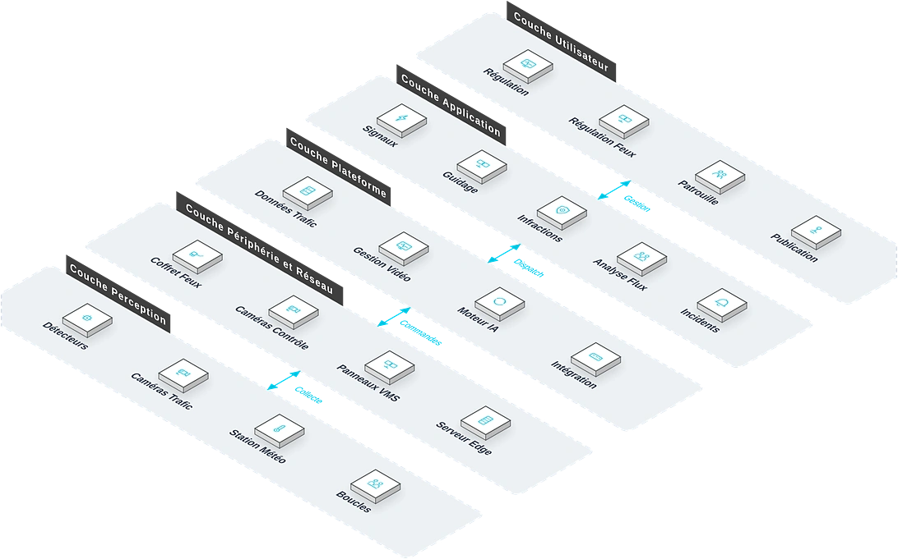

Pour les services de gestion du trafic urbain et les maîtres d'ouvrage d'infrastructures de transport, une solution intelligente couvrant régulation des feux, vidéosurveillance, détection des infractions, analyse des flux et publication de guidage, qui répond aux points de douleur clés que sont la congestion sévère des carrefours, la fréquence des infractions et la sous-utilisation des données, améliorant la capacité routière et la sécurité.
Vue d'ensemble
Fournit aux services de gestion du trafic urbain et aux maîtres d'ouvrage une solution intelligente couvrant régulation des feux, vidéosurveillance, détection des infractions, analyse des flux et publication de guidage, répondant à la congestion, aux infractions fréquentes et aux données sous-exploitées, et améliorant capacité routière et sécurité.
Applicable à : Services de gestion du trafic urbain, maîtres d'ouvrage d'infrastructures de transport, exploitants autoroutiers.
- Compatible avec les principales marques de contrôleurs de feux nationales et internationales, protégeant les investissements
- L'analyse vidéo IA évite de découper la chaussée pour poser des boucles, chantiers courts
- Interfaces de données ouvertes vers les centres de commandement du trafic et les fournisseurs de cartes
- A participé à le projet du Pôle d'Échange Multimodal Mile 2, le projet de la Ligne Bleue du Tramway de Lagos Phase V et le projet de la Gare Ferroviaire de Kano
Bénéfices : Capacité routière accrue, accidents réduits, services de transport en commun améliorés.
Défis Métier
Dans la gestion du trafic urbain, les clients font souvent face à une congestion chronique des carrefours, des infractions fréquentes et des services de transport public faibles ; ils ont besoin d'une solution multi-scénarios pilotée par la donnée, compatible avec les infrastructures de signalisation existantes.
Congestion sévère aux carrefours
Des plans de feux fixes ne s'adaptent pas aux flux changeants ; les files s'étirent aux heures de pointe.
Infractions fréquentes
Feux rouges brûlés, excès de vitesse et contresens dépendent d'un contrôle manuel à la couverture limitée.
Données de trafic dormantes
Les données de flux aux carrefours restent inexploitées, privant les décisions d'optimisation de support.
Transport public faible
Les bus ne bénéficient d'aucune priorité, arrivent en retard et offrent une expérience passager médiocre.
Mobilité et contrôle en berne
Les feux ignorent les flux réels et les infractions reposent sur l'humain : congestion aux heures de pointe, traitement des incidents ralenti, expérience des usagers dégradée.
Compatibilité avec l'existant
Les principales marques de contrôleurs de feux doivent être prises en charge pour préserver les investissements.
Interfaces de données ouvertes
Des interfaces ouvertes sont nécessaires pour les centres de commandement et les fournisseurs de cartes.
Scénarios typiques :
Rôles concernés : Ingénieurs trafic, commandants de police routière, équipes d'entretien des voiries.
Architecture
Circulation Intelligente repose sur une topologie métier à cinq couches : Régulation, Régulation Feux et autres bureaux utilisent les applications quotidiennes comme Signaux et Guidage, coordonnés par la couche plateforme ; les équipements de périphérie (Coffret Feux, Caméras Contrôle) sur site raccordent les équipements de perception (Détecteurs, Caméras Trafic) : les données montent vers la plateforme et les commandes descendent jusqu'au terrain.

Disposition métier : la couche utilisateur regroupe les bureaux (Régulation, Régulation Feux…) ; la couche application porte les fonctions quotidiennes ; la plateforme fournit Données Trafic et Gestion Vidéo ; la couche périphérie et réseau situe les équipements sur site (Coffret Feux, Caméras Contrôle…) ; les équipements de perception sont déployés sur Détecteurs, Caméras Trafic et le terrain.
Modules clés
Contrôle de la signalisation
Compatible avec les principales marques de contrôleurs de feux nationales et internationales, avec réglage des plans à distance.
Analyse vidéo IA
Détection de flux et d'infractions sans boucle de voirie — des chantiers courts.
Détection d'infractions
Capture et preuve automatiques des feux rouges brûlés, excès de vitesse et contresens.
Diffusion de guidage
Infos routières publiées en temps réel via écrans de guidage et interfaces ouvertes.
Priorité bus
La détection des bus allonge automatiquement le vert, améliorant la ponctualité.
Capacités d'intégration :
- Compatible avec les principales marques de contrôleurs de feux nationales et internationales
- L'analyse vidéo IA ne nécessite aucune boucle de voirie
- Interfaces de données ouvertes pour les centres de commandement du trafic et les fournisseurs de cartes
Avantages et livraison
Avec l'analyse vidéo IA et la compatibilité multi-marques, nous livrons aux villes une capacité routière accrue et une aide à la décision fondée sur la donnée, via des levés de site, le réglage des feux et des services d'optimisation continue.
Avantages différenciants
Forte compatibilité
Compatible avec les principales marques de contrôleurs de feux : investissements protégés.
Chantier simple
L'analyse vidéo IA évite de couper la chaussée : chantier court, maintenance économique.
Données ouvertes
Interfaces ouvertes vers les centres de commandement et les fournisseurs de cartes.
Expérience d'ingénierie
Impliqué dans le Pôle d'Échange Multimodal Mile 2, le projet de la Ligne Bleue du Tramway de Lagos Phase V et le projet de la Gare Ferroviaire de Kano.
Optimisation intelligente des feux
Les plans de feux s'optimisent automatiquement à partir des données de flux.
Couverture multi-scénarios
Contrôle des carrefours, surveillance, guidage et priorité bus.
Processus de mise en œuvre
Étude des besoins
État des carrefours et objectifs.
Relevé de site
Points de détection, feux et guidage.
Installation
Détecteurs, contrôleurs, écrans de guidage.
Déploiement plateforme
Plateforme de régulation configurée.
Réglage des feux
Optimisation des plans selon les flux.
Formation et remise
Former les gestionnaires et mettre en service.
Garantie de service
Valeur client
Capacité routière accrue, accidents réduits et transports publics améliorés, avec des données à l'appui des décisions.
Garantie d'un an
Optimisation continue des feux
Support technique à distance
Inspections périodiques
Études de cas
Projet du Pôle d'Échange Multimodal Mile 2
Contexte : Projet de construction du Pôle d'Échange Multimodal Mile 2 à Lagos, Nigeria.
Défi : Flux routiers massifs et complexes exigeant un système intelligent intégré.
Solution : Participation aux systèmes ELV et intelligents.
Résultats : Systèmes intelligents du hub livrés : expérience acquise en grands projets de transport.
Projet de la Ligne Bleue du Tramway de Lagos Phase V
Contexte : Projet de la Ligne Bleue du Tramway de Lagos Phase V à Lagos, Nigeria.
Défi : Systèmes ferroviaires complexes, nombreux sous-systèmes intelligents, forte exigence d'intégration.
Solution : Participation aux systèmes ELV et intelligents.
Résultats : Livré dans les délais, élargissant l'expérience ferroviaire de l'entreprise.
Projet de la Gare Ferroviaire de Kano
Contexte : Projet de construction de la Gare Ferroviaire de Kano au Nigeria.
Défi : Flux d'usagers et de véhicules denses exigeant une gestion intelligente complète.
Solution : Participation aux systèmes ELV et intelligents.
Résultats : Systèmes livrés : capacité de réalisation sur les gares acquise.